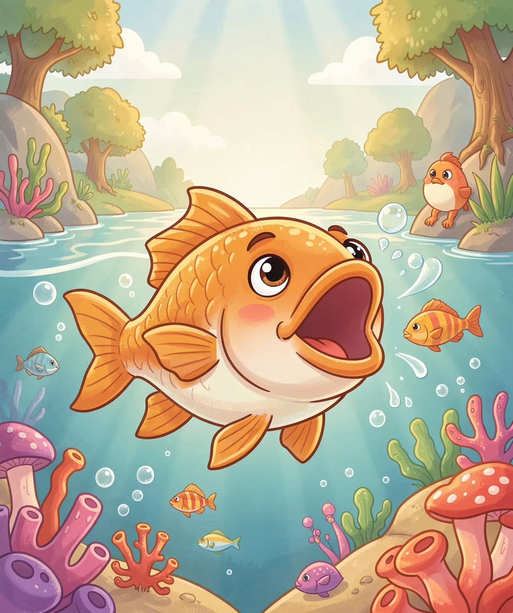
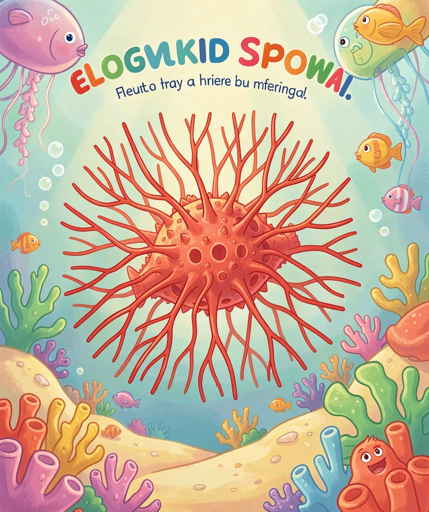
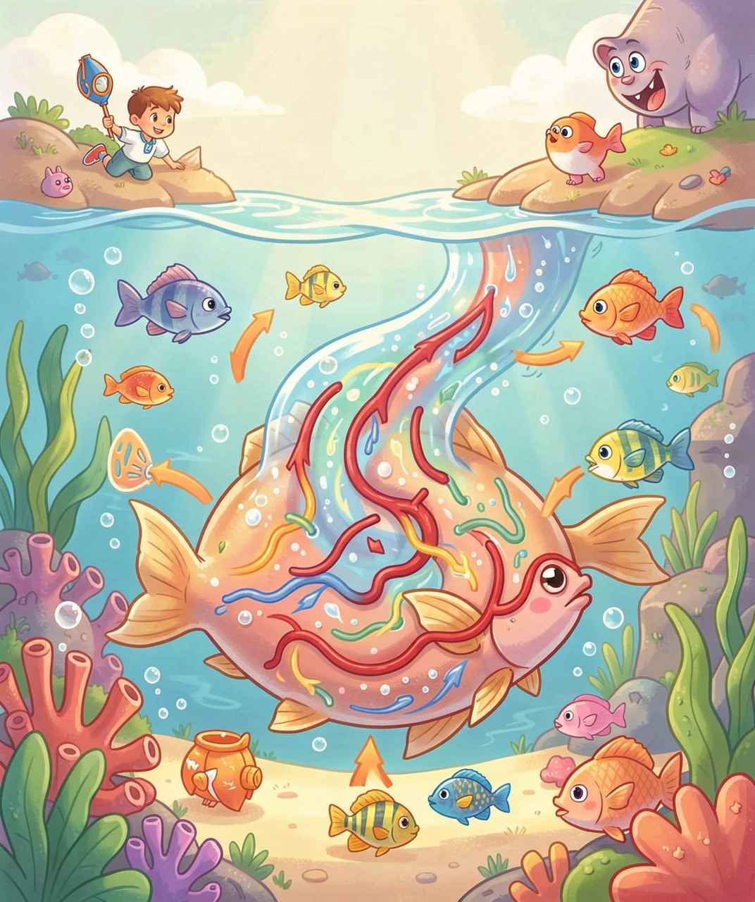
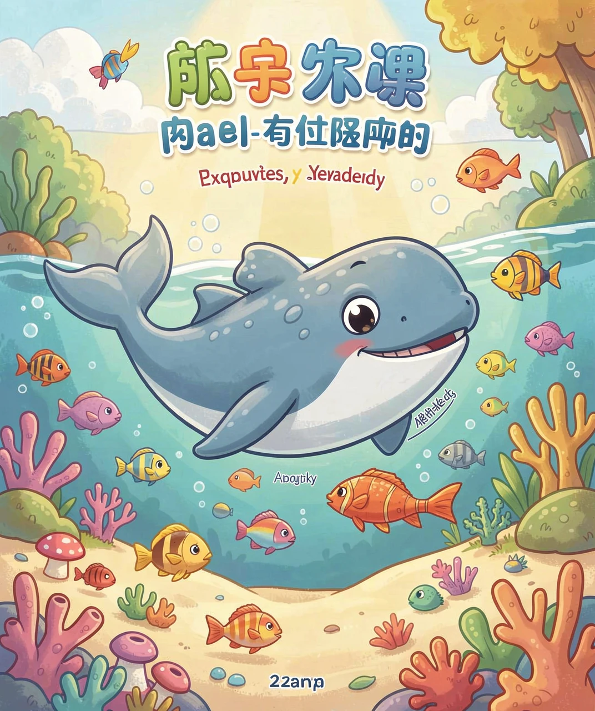
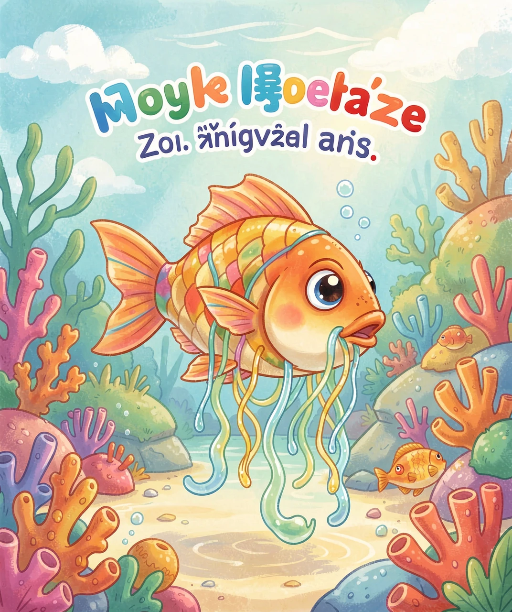

水下世界的「氧气工厂」
我们人类要是把头埋进水里，过不了一分钟就会憋得难受，必须赶紧浮上来吸气。可是鱼呢？它们整天待在水里，从来不用浮出水面，却活得自由自在。鱼是怎么在水里呼吸的呢？
你可能会想：鱼是不是不用呼吸？当然不是！鱼和我们一样，也需要氧气才能活下去。只不过，鱼呼吸的地方和方式，和我们完全不一样。
秘密就藏在鱼身体两侧那个一开一合的「小盖子」下面。你仔细观察水里的鱼，会发现它的腮帮子总在不停地动——那其实就是鱼在「呼吸」。今天，我们就钻进水里，去看看鱼到底是怎么把氧气吸进身体的。

我们人类用肺呼吸空气，鱼则用鳃（sāi）来呼吸水。鳃长在鱼头的两侧，藏在鳃盖下面。
如果你掀开鳃盖往里看，会看到一排排像梳子一样的东西，那就是鳃丝。鳃丝是红色的，因为里面布满了密密麻麻的毛细血管——血就是从这些细小的管子里流过的。鳃丝又细又软，一层层叠起来，总面积特别大，像一床叠起来的毛巾。
为什么鳃要弄得这么大面积呢？因为面积越大，鱼接触水的「窗口」就越大，能吸到的氧气就越多。这就像洗衣服时，把衣服摊开晾，比揉成一团干得快——接触空气的面积大，效率就高。

现在关键的问题来了：溶在水里的氧气，是怎么跑到鱼身体里去的呢？这靠的是一个神奇的规律——扩散。
扩散就是：东西会从「多的地方」，自己跑到「少的地方」去。就像你在房间一角喷了香水，香味会慢慢飘满整个房间——因为香味从「多的地方」（喷的地方）向「少的地方」（没香味的地方）跑。
鱼呼吸时，先张大嘴巴，把水「喝」进来；然后闭上嘴，把水挤过鳃丝。这时候，水里的氧气多，而鱼血里的氧气少（因为血里的氧气已经被身体用掉了）。于是，氧气就顺着「从多到少」的方向，穿过薄薄的鳃丝，钻进了鱼的血液里。
同时，鱼身体里产生的废气——二氧化碳，也会从血里跑到水里，被水带走。这一进一出，鱼就完成了呼吸。你看，根本不用浮出水面！

大部分鱼都用鳃呼吸，但水里还有一群「特别分子」，它们另有高招。
比如鲸鱼和海豚，它们虽然生活在水里，却不是鱼，而是哺乳动物。它们和我们一样用肺呼吸，所以必须时不时浮出水面，用头顶的「气孔」换气。鲸鱼喷出的那根「水柱」，其实就是它呼吸时喷出的气和水汽。
还有一些鱼，除了鳃，还有「备用的肺」。比如肺鱼，它们在旱季水快干涸时，能钻进泥里，用像肺一样的鱼鳔（biào）来呼吸空气，睡上一整个旱季。
还有弹涂鱼，它们能爬上泥滩，靠湿润的皮肤和鳃腔里储存的水来呼吸。所以，虽然「用鳃」是鱼的标配，但水里的呼吸方式，其实多种多样。

你可能听过一句俗话：「鱼儿离不开水」。这是为什么呢？现在你应该明白了——因为鱼靠鳃呼吸，而鳃必须在水里才能工作。
鳃丝又薄又软，靠水的浮力才能舒展开。一旦鱼离开水，鳃丝就会粘在一起，瘪成一团，接触空气的面积一下子变小，而且很快就会变干，没法再从水里「捞」氧气了。所以鱼上岸后，很快就会因为「吸不到氧」而死掉。
这也提醒我们：水对鱼来说，不只是「住的地方」，更是它「呼吸的地方」。所以养鱼的时候，要经常给水打氧、换水，保证水里有足够的溶解氧，鱼才能健康地游来游去。
认识了鱼的呼吸，你是不是更佩服大自然的设计了？一条小小的鱼，靠着精巧的鳃，就能在水下自由自在地呼吸，真是太神奇了。

（答案：B、B、B、A、B。你都答对了吗？）